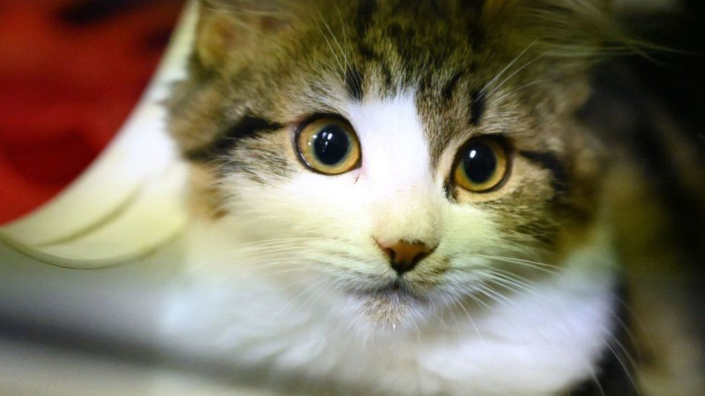

Mèo :
Mèo, chính xác hơn là mèo nhà để phân biệt với các loài trong họ Mèo khác, là động vật có vú, nhỏ nhắn và chuyên ăn thịt, sống chung với loài người, được nuôi để săn vật gây hại hoặc làm thú nuôi cùng với chó nhà. Người ta tin rằng tổ tiên trung gian gần nhất trước khi được thuần hóa của chúng là mèo rừng châu Phi (Felis silvestris lybica). Mèo nhà đã sống gần gũi với loài người ít nhất 9.500 năm,[4] và hiện nay chúng là con vật cưng phổ biến nhất trên thế giới.[5]
Có rất nhiều các giống mèo khác nhau, một số không có lông hoặc không có đuôi, và chúng tồn tại với rất nhiều màu lông. Mèo là những con vật có kỹ năng của thú săn mồi và được biết đến với khả năng săn bắt hàng nghìn loại sinh vật để làm thức ăn. Chúng đồng thời là những sinh vật thông minh, và có thể được dạy hay tự học cách sử dụng các công cụ đơn giản như mở tay nắm cửa hay giật nước trong nhà vệ sinh.
Tai
Với 32 cơ riêng biệt điều khiển hướng nghe của tai;[13] mèo có thể vểnh mỗi tai theo một hướng khác nhau. Nhờ tính năng động cao như vậy, mèo có thể quay người về một hướng và vểnh tai theo hướng khác. Đa số mèo có tai thẳng vểnh cao. Không giống như chó, các giống mèo có tai cụp rất hiếm. (Mèo giống Scottish Fold là một loài đã biến đổi như vậy.) Khi giận dữ hay sợ hãi, mèo thường chĩa tai về phía sau, đồng thời phát ra các âm thanh gầm gừ hay tiếng rít. Mèo cũng chĩa tai về phía sau khi chúng chơi đùa, hay thỉnh thoảng khi chú ý tới một tiếng động phát ra từ phía sau nó.
Chân
Giống như chó, mèo là loài vật đi trên đầu ngón chân: chúng bước trực tiếp trên các ngón, các xương bàn chân của chúng tạo thành phần thấp nhìn thấy được của cẳng chân. Mèo có thể bước rất chính xác, bởi vì giống như mọi giống thuộc loài mèo khác, chúng ghi nhận trực tiếp; có nghĩa là chúng đặt bàn chân sau (hầu như) trực tiếp lên dấu của bàn chân trước, giảm thiểu tiếng ồn và dấu vết để lại. Điều này cũng giúp chúng có vị trí đặt chân sau tốt khi bước đi trên bề mặt gồ ghề. Giống như mọi thành viên khác của họ mèo, loại trừ loài báo gêpa, mèo có vuốt thu lại được. Bình thường, ở vị trí nghỉ các vuốt được thu lại trong da và lông quanh đệm ngón. Điều này giữ vuốt luôn sắc bởi chúng không tiếp xúc với mặt đất cũng như cho phép mèo đi nhẹ nhàng rình mồi. Các vuốt chân trước thường sắc hơn so với phía sau. Mèo có thể giương một hay nhiều vuốt ra tùy theo nhu cầu. Chúng thường giương vuốt khi săn mồi, tự vệ, hay leo trèo, "nhào lộn", hay để tăng ma sát khi bước đi trên các bề mặt trơn (khăn trải giường, thảm dày, vân vân). Các vuốt cong có thể bị mắc vào thảm hay các tấm vải dày, khiến mèo bị thương nếu chúng không thể tự gỡ.
Trèo cao và ngã
Đa số các giống mèo đều thích trèo cao hay ngồi ở các vị trí cao. Các nhà nghiên cứu hành vi động vật đã đưa ra một số giải thích điều này, thông thường nhất là, "độ cao khiến mèo có điểm quan sát tốt hơn. Từ vị trí đó, chúng có thể giám sát vương quốc của mình và biết mọi hoạt động của con người cũng như các con vật khác. Trong môi trường sống hoang dã, một vị trí trên cao cũng được dùng làm nơi ẩn mình để săn mồi."[17] Vì thế độ cao cũng có thể mang lại cho mèo cảm giác an toàn và uy thế. Tuy nhiên, sự ưa chuộng độ cao này có thể là một cách thử nguy hiểm đối với quan niệm thông thường rằng một chú mèo "luôn rơi chân xuống trước". Cơ quan bảo vệ động vật Hoa Kỳ đã cảnh báo những người chủ nên canh chừng những vị trí nguy hiểm trong nhà họ để tránh "hội chứng trèo cao", có thể khiến một chú mèo quá tự tin bị ngã từ độ cao quá lớn.[18]